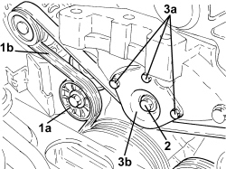
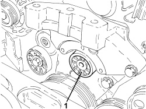
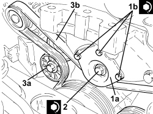

1092G20 ENGINE COMPONENT SINGLE BELT FIXED TENSIONER - ONE - R + R
- Path
- Procedures > 10 ENGINE > 1092 ENGINE COMPONENT MISCELLANEOUS DRIVES > 1092G SINGLE DRIVE BELT FOR VARIOUS ENGINE COMPONENTS > 1092G20 ENGINE COMPONENT SINGLE BELT FIXED TENSIONER - ONE - R + R
- Kind
- repair procedure (removal / refitting; the operation number is the code)
- Applies to
- engines: 1.9 JTD 8V, 1.9 JTD 16V; all production periods
- Interactive page
- https://sloeber94.github.io/elrnDB/#/939010707
Applies to: engines: 1.9 JTD 8V, 1.9 JTD 16V; all production periods
 Removing
Removing
 Refitting
RefittingOp. 1048A28 VACUUM AIR CIRCUIT RESONATOR PIPE - R+R
Op. 1016A10 SOUND-PROOFING COVER - R.R
Op. 1008B10 POWER UNIT FRONT SUPPORT FLEXIBLE MOUNTING (TIMING SIDE) - REPLACE
1. Apply a wrench to mobile tensioner (1a) in order to remove the auxiliary drivebelt (1b).
2. Unscrew the bolt securing the auxiliary drivebelt fixed tensioner.
3. Undo the bolt (3a) and remove the protection of the auxiliary drive belt fixed tensioner (3b).

Applies to: engines: 1.9 JTD 8V, 1.9 JTD 16V; all production periods
1. Remove the auxiliary drivebelt fixed tensioner.

Applies to: engines: 1.9 JTD 8V, 1.9 JTD 16V; all production periods
Refitting
Removing- Refit the auxiliary drivebelt fixed tensioner.
1. Position the auxiliary drivebelt fixed tensioner (1a) in its housing and secure it tightening the bolt (1b) to the recommended torque.
Component | Fastening | dia | Value (daNm) | Validity |
|---|---|---|---|---|
Engine components single belt fixed tensioner guard | Bolt | M | (rigid mount side) | 1.9 JTD 8V 1.9 JTD 16V |
2. Tighten the bolt securing the auxiliary drivebelt fixed tensioner to the specified torque.
Component | Fastening | dia | Value (daNm) | Validity |
|---|---|---|---|---|
Engine components single belt fixed tensioner | Bolt | M10 | (engine block side) 5.0 | 1.9 JTD 16V |
3. Apply a wrench to mobile tensioner (3a) in order to fit the auxiliary drivebelt (3b).

Applies to: engines: 1.9 JTD 8V, 1.9 JTD 16V; all production periods
Op. 1008B10 POWER UNIT FRONT SUPPORT FLEXIBLE MOUNTING (TIMING SIDE) - REPLACE
Topics linked from this page (3)
- 1008B10 POWER UNIT FRONT SUPPORT FLEXIBLE MOUNTING (TIMING SIDE) - REPLACE
- 1016A10 SOUND-PROOFING COVER - R.R
- 1048A28 VACUUM AIR CIRCUIT RESONATOR PIPE - R+R